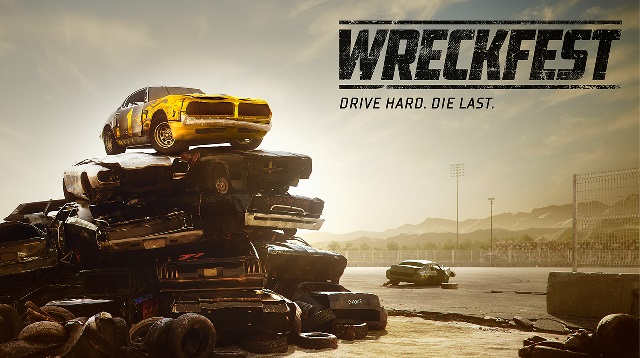
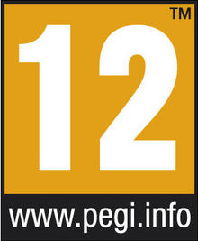
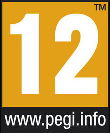

Wreckfest

PLATFORMY
PC
XOne
PS4
------

Wiecej Zdj.
Dynamiczna gra wyścigowa, opracowana przez twórców kultowej serii FlatOut i dwóch ostatnich odsłon niemniej legendarnego Ridge Racera – fińskie studio Bugbear Entertainment.
Wreckfest to kolejna gra wyścigowa studia Bugbear Entertainment, które stoi za takimi tytułami jak Rally Trophy, Ridge Racer Unbounded oraz FlatOut. Sercem tej produkcji są modele aut produkowanych pod koniec ubiegłego wieku. Rozgrywka nastawiona jest na rywalizację pełną celowych kraks i stłuczek oraz swobodne tuningowanie pojazdów.
MECHANIKA
Wreckfest czerpie garściami z rozwiązań zastosowanych w serii FlatOut. W tej grze nie liczy się wyłącznie prędkość, ponieważ na torach toczy się ostra walka pomijająca zasady fair play. Możemy przeszkadzać rywalom, spychając ich pojazdy z trasy czy doprowadzając do kolizji, by ostatecznie całkowicie wyeliminować ich z gry. System zniszczeń w realistyczny sposób odwzorowuje zachowanie pojazdów. Prowadząc uszkodzone auto, możemy odczuć problemy z układem sterowania, hamowaniem, pracą silnika itp. Istotnym elementem gry jest możliwość modyfikacji samochodów. Podczas wyścigów zdobywamy kolejne części, dzięki czemu możemy personalizować nie tylko wygląd pojazdów, ale także ich parametry. Każde z aut możemy wyposażyć we wzmocnione zderzaki czy klatki bezpieczeństwa, co zapewni lepszą skuteczność na arenie. Z drugiej strony możemy odciążyć pojazd czy ulepszyć układ paliwowy, by zagwarantować maszynie lepsze osiągi na torze.
Wreckfest czerpie garściami z rozwiązań zastosowanych w serii FlatOut. W tej grze nie liczy się wyłącznie prędkość, ponieważ na torach toczy się ostra walka pomijająca zasady fair play. Możemy przeszkadzać rywalom, spychając ich pojazdy z trasy czy doprowadzając do kolizji, by ostatecznie całkowicie wyeliminować ich z gry. System zniszczeń w realistyczny sposób odwzorowuje zachowanie pojazdów. Prowadząc uszkodzone auto, możemy odczuć problemy z układem sterowania, hamowaniem, pracą silnika itp. Istotnym elementem gry jest możliwość modyfikacji samochodów. Podczas wyścigów zdobywamy kolejne części, dzięki czemu możemy personalizować nie tylko wygląd pojazdów, ale także ich parametry. Każde z aut możemy wyposażyć we wzmocnione zderzaki czy klatki bezpieczeństwa, co zapewni lepszą skuteczność na arenie. Z drugiej strony możemy odciążyć pojazd czy ulepszyć układ paliwowy, by zagwarantować maszynie lepsze osiągi na torze.
TRYB GRY
Gra oferuje dwa podstawowe tryby rozgrywki: tryb kariery przeznaczony dla pojedynczego gracza oraz tryb wieloosobowy. Solowa kariera sprowadza się do rywalizacji z S.I. w kolejnych wielkich zawodach podzielonych na pomniejsze turnieje. Każdy wyścig w tym trybie to szansa na zdobycie punktów doświadczenia, odblokowania nowych części lub nowych pojazdów. Zasady rozgrywki są podobne dla tradycyjnych gier wyścigowych, w których zwycięzcą jest ten, kto pierwszy przekroczy linię mety. Wreckfest jednak nawet w tym trybie skupia się głównie na przepychankach pomiędzy pojazdami, z których każdy może zostać wyeliminowany z wyścigu przez konkurentów. Na trasach możemy spodziewać się licznych niespodzianek w stylu niebezpiecznych skrzyżowań z natężonym ruchem ulicznym. Multiplayer we Wreckfest umożliwia zmagania z graczami z całego świata lub wyłącznie w gronie znajomych w kilku dostępnych wariantach rozgrywki. Wspólnym mianownikiem sieciowych zestawów zasad jest nacisk na destrukcję aut przeciwników.
Gra oferuje dwa podstawowe tryby rozgrywki: tryb kariery przeznaczony dla pojedynczego gracza oraz tryb wieloosobowy. Solowa kariera sprowadza się do rywalizacji z S.I. w kolejnych wielkich zawodach podzielonych na pomniejsze turnieje. Każdy wyścig w tym trybie to szansa na zdobycie punktów doświadczenia, odblokowania nowych części lub nowych pojazdów. Zasady rozgrywki są podobne dla tradycyjnych gier wyścigowych, w których zwycięzcą jest ten, kto pierwszy przekroczy linię mety. Wreckfest jednak nawet w tym trybie skupia się głównie na przepychankach pomiędzy pojazdami, z których każdy może zostać wyeliminowany z wyścigu przez konkurentów. Na trasach możemy spodziewać się licznych niespodzianek w stylu niebezpiecznych skrzyżowań z natężonym ruchem ulicznym. Multiplayer we Wreckfest umożliwia zmagania z graczami z całego świata lub wyłącznie w gronie znajomych w kilku dostępnych wariantach rozgrywki. Wspólnym mianownikiem sieciowych zestawów zasad jest nacisk na destrukcję aut przeciwników.
WYMAGANIA
Minimalne:
Intel Core 2 Duo 2.7 GHz, 4 GB RAM, karta grafiki 1 GB GeForce GTX 460 / Radeon HD 6850 lub lepsza, 15 GB HDD, Windows Vista
Rekomendowane:
Intel Core i5 3.0 GHz, 8 GB RAM, karta grafiki 4 GB GeForce GTX 970 / Radeon R9 380X lub lepsza, 15 GB HDD, Windows 7/8/10
Intel Core i5 3.0 GHz, 8 GB RAM, karta grafiki 4 GB GeForce GTX 970 / Radeon R9 380X lub lepsza, 15 GB HDD, Windows 7/8/10
Minimalne:
Intel Core 2 Duo 2.7 GHz, 4 GB RAM, karta grafiki 1 GB GeForce GTX 460 / Radeon HD 6850 lub lepsza, 15 GB HDD, Windows Vista
PEGI


Język Gry

PL napisy, EN napisy